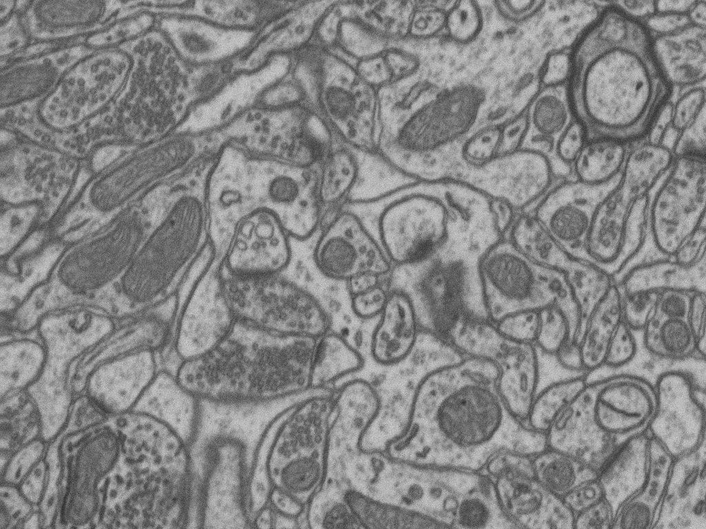
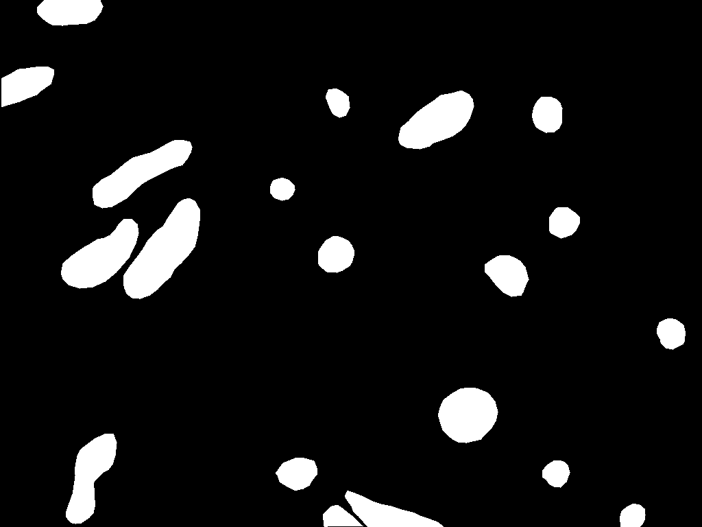

2D Mitochondria segmentation¶
Problem description¶
The goal is to segment automatically mitochondria in EM images. This is a semantic segmentation problem where pairs of EM image and its corresponding mitochodria mask are provided. Our purpose is to segment automatically other mitochondria in images not used during train labeling each pixel with the corresponding class: background or foreground. In this example, EPFL Hippocampus dataset is used, so the foreground class correspond to mitochondria.

EM tissue image sample.¶ |

Its corresponding mask.¶ |
Data preparation¶
The data directory tree should follow the structure described First steps -> Step 1: Data preparation.
Problem resolution¶
All the models are prepared to make semantic segmentation. The model will output the probability of each pixel of beeing the foreground class (mitochondria in this case).
Choose a template¶
Refer to the code version V1.0 in case you want to reproduce exact results of Stable Deep Neural Network Architectures for Mitochondria Segmentation on Electron Microscopy Volumes. Once the code is cloned you can use any of the templates from here.
Otherwise, to create the YAML file you can use the template unet_2d.yaml which is prepared for this tutorial.
See also
Adapt the configuration file to your specific case and see more configurable options available at config.py.
Run¶
Run the code with any of the options described in HOW TO RUN section that best suits you. For instance, you can run it through bash shell as described in: Bash Shell -> Step 2: Run the code.
Results¶
The results are placed in results folder under --result_dir directory with the --name given. See Step-4-analizing-the-results to find more details about the files and directories created. There
you should find something similiar to these results:

2D U-Net model predictions. From left to right: original test images, its ground truth (GT) and the overlap between GT and the model’s output.¶
Evaluation¶
To evaluate the quality of the results in semantic segmentation:
IoU values will be printed when
DATA.TEST.LOAD_GTis True, as we have GT to compare the predictions with. The results will be divided in: per patch, merging patches and full image depending on the options selected to True inTEST.STATS.*variable.
Citation¶
This workflow was used to make the following work:
@Article{Franco-Barranco2021,
author={Franco-Barranco, Daniel and Muñoz-Barrutia, Arrate and Arganda-Carreras, Ignacio},
title={Stable Deep Neural Network Architectures for Mitochondria Segmentation on Electron Microscopy Volumes},
journal={Neuroinformatics},
year={2021},
month={Dec},
day={02},
issn={1559-0089},
doi={10.1007/s12021-021-09556-1},
url={https://doi.org/10.1007/s12021-021-09556-1}
}